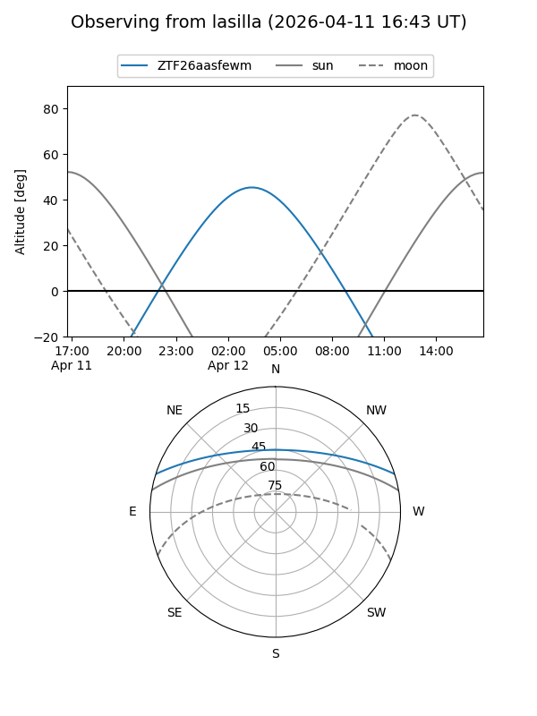
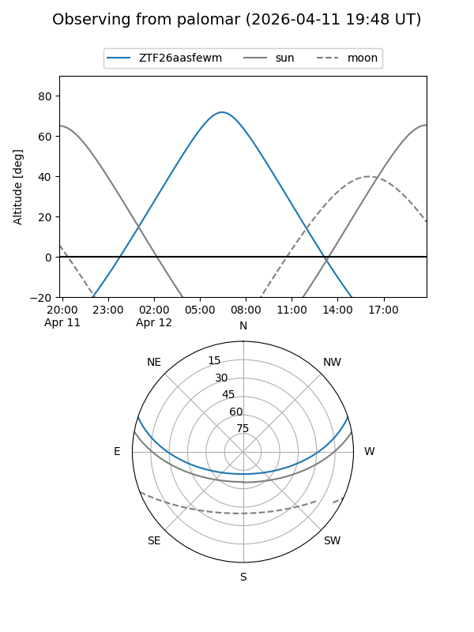

ZTF26aasfewm
Target ZTF26aasfewm at 2026-04-12 07:41
Aliases and brokers:
FINK: link
Lasair: link
ALeRCE: link
alt names
ZTF26aasfewm (ztf,fink_ztf)
Coordinates:
equatorial (ra, dec) = 179.9810,+15.44226
equatorial (HMS+DMS) = 11:59:55.45,+15:26:32.12
galactic (l, b) = (254.6437,+73.27421)
Flags:
Photometry:
last ztfg=19.62
2 ztfg detections
Lightcurve
Visibility


Additional plots